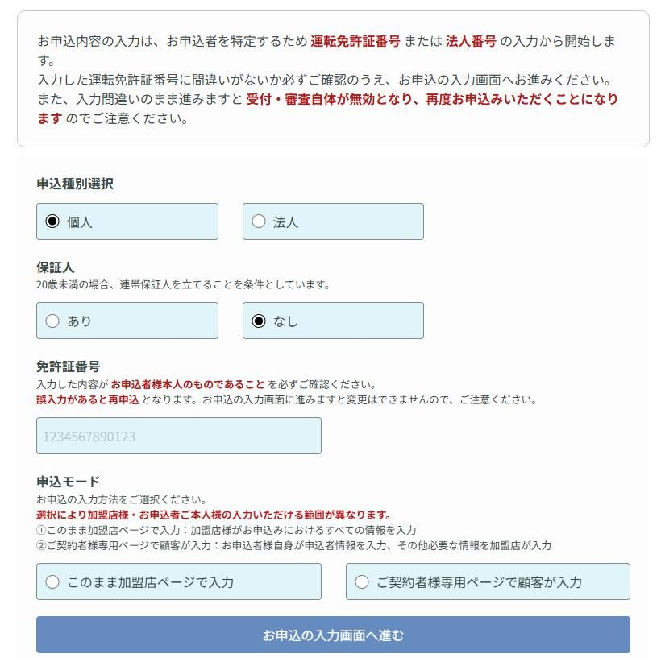
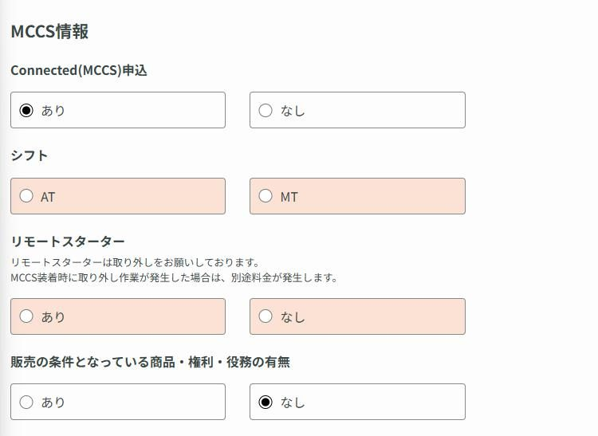

単元9
詳しいマニュアル
審査のかけ方と金額設定
可決をもらうための仮審査の申込み方を、信販会社ごとに画面の順番どおりに説明します。審査は①プレミア（収入証明があればUSSも同時）→②翌日に結果確認→③リローン→④ICTの順に進めます（単元7）。
- 前審査前の準備免許証・収入証明の確認、重複チェック
- 1日目プレミア（＋USS）収入証明がある方はUSSも同時に
- 2日目結果確認どちらか可決なら報告して終了
- 2日目リローン両方否決なら。翌日に結果確認
- 3日目ICT（ノレル）リローンも否決なら送客
審査前の準備（全社共通）
なぜやるか名前の漢字1字や書類の不備で、審査は差し戻されます。最初に書類と重複を確認しておくと、やり直しが減ります。
免許証を確認する
- 有効期限が切れていないか。リローンは期限まで1か月を切っていたら、更新してから審査する
- 反射やピントのずれで読めない所がないか
- 外国籍の方は在留カードの表裏も確認する
収入証明を確認する（USS・リローン）
- 給与明細：会社名・本人の名前・支給年月日（前月分）が載っているか
- 確定申告書：受付日時の記載か、受信通知があるか
- 源泉徴収票はUSSでは使えない
グループ内の重複を確認する
- USS：共有の「審査関連」スプレッドシートのUSSシートに、審査前に入力する。名前が赤くなったら過去にグループ内で審査歴があるので上長に確認
- リローン：重複チェックシステムに名前を入れてチェック。NGなら審査も登録もできない。1か月以上たっていればOKだが、直近の結果はほぼ変わらないので過去の結果を先に見る

図3-Jリローン：重複チェックシステム
注意・よくある間違い
- 名前は免許証と同じ漢字にする（髙・高、﨑・崎など）
- ログインID・パスワードはマニュアルに書かない。部署の記入欄（単元13）で管理する
プレミア（モビリティ）の仮審査
なぜやるか最初にかける会社です。添付書類なしで申し込めて、5〜8分で終わります。
- 名乗り
- モビリティアンサーホールディングス（お客様には媒体名）
- 条件
- 18歳以上・完済時75歳未満。障害年金のみは不可
- 回答
- 審査中なら翌日12時以降に反映
- 作業時間
- 5〜8分
ログインして「新規クレジット申込」を開く
- 「クレジット」→「新規クレジット申込」
- お客様名・販売担当者名は、姓と名の間に全角スペース
- 申込区分＝個人、販売形態＝店舗、分割払方法＝通常分割払
写真を追加予定ログイン後のメニューと「新規クレジット申込」の画面提携先・ローン種別・金額を入れる
- 提携先＝通常オート、ローン種別＝中古車（画面が更新されるので1つずつ選ぶ）
- 金額は下の「金額の入れ方」のとおり
- 「試算条件確認」を押す

図3-Eプレミア：金額の入力画面 車の情報は※の項目だけ入れる
- 走行距離は繰り上げる（2.3万km→3万km）
- 主な使用目的＝通勤・通学、登録＝自家用（事業用は不可）
- 画像の添付は仮審査ではなしでよい（外国籍の方は免許証と在留カードの表裏）
申込方法を選ぶ
- 「店頭にてお申込を継続される場合」を選び、「次へ」→ 上に出るポップアップで「OK」

図3-Fプレミア：「店頭にてお申込を継続される場合」を選ぶ 同意画面で「代理入力」に必ずチェック
- 個人情報の取扱い・クレジット契約約款の2つに同意
- 「販売店さまに代理入力を依頼」にチェック
- 「オートクレジット＆カード同時申込」は「不要」。申し込むとお客様にメールが行くので注意

図3-Gプレミア：同意画面で「販売店さまに代理入力を依頼」に必ずチェック お客様情報を入れる（※の項目だけ）
- 名前：カナ14文字・漢字7文字まで。外国籍の方は入る所まで左詰めで、漢字欄に英語表記
- 住所：郵便番号で検索。出ないときは郵便番号をネットで確認し、県名と途中まで入れて検索
- 居住年数は繰り上げ（0年3か月→1年）。携帯電話は必須
- 自営業で株式会社・有限会社などの屋号がある方は「正社員」にして、次の画面で役職を役員・代表にする
- 勤め先電話が携帯の場合はハイフンなし
「審査申込」で送って自動審査を待つ
- 申込の選択は「審査申込」。本申込にしない
- 「申込書ダウンロードと審査申込を行う」→「自動審査を行う」
- 結果は「審査中」「お見送り」「自動可決」。自動可決はほとんどなく、審査中なら翌日12時以降に反映
写真を追加予定自動審査の結果画面（審査中・お見送り・可決の表示）
金額の入れ方
| 8課の運用 | 車両本体価格（税抜）＝業販価格×1.1＋115万円−26万円、付属品8万円、諸費用18万円、実質年率13.9%、72回 |
|---|---|
| 3課の運用 | 本体価格＝審査したい金額−諸費用、諸費用30万円・実質年率9.9%・84回で固定 |
確認中：部署で入れ方が違う。どちらに統一するか
注意・よくある間違い
- シフト可決は金利13.9%・300万円までの条件付き
- 20歳未満は「金利込み200万円まで」の条件が付きやすい
- 免許証に刺青が写っている方は本審査NG
USSの仮審査
なぜやるか収入証明がある方だけ、プレミアと同時にかけます。15時までに申し込めば当日に回答が出ます。
- 名乗り
- 九州レンタリースサービス
- 条件
- 20歳以上・完済時65歳未満（18〜19歳は保証人必須）、年金のみ不可、国産車のみ
- 回答
- 15時までの申込は当日、以降は翌日。日祝以外ほぼ稼働
- 作業時間
- 5〜8分
USSシートに入力してから申し込む
- 日付・担当・源泉（MIC・モビローンなど）・名前（姓名の間にスペースなし）・住所・電話（ハイフンなし）・車種・金額
- 結果が出たら、否決／保証人再審査／減額〇万などを書き足す
新規審査申込を開く
- 「申込管理」→「＋新規審査申込」→「個人」、保証人なし（20歳未満は必要）
- 免許証番号を入れて「このまま加盟店ページで入力」
- 他店で申込中だとエラーで進めない＝申込不可

図3-HUSS：新規審査申込の最初の画面（個人・保証人・免許証番号） 赤枠の必須項目を入れる
- フリガナは半角。住所1・2は数字・ハイフンも全角、住所のフリガナは半角
- 字（あざ）が抜けることがあるので免許証・住民票と合わせる
- 勤務先名は給与明細に合わせる。支店・工場は所属欄へ。派遣社員は派遣元
- 勤務先の電話・住所はホームページか給与明細の本社のもの
- 役職がなければ「一般」
車両情報を入れる
- MCCS＝あり、リモートスターター＝なし、販売の条件となっている商品・役務＝なし、主な使用目的＝日常
- シフト・エンジンスタート（プッシュか回転キー）は車に合わせる
- 対象外の車は選べない

図3-IUSS：MCCS情報の入力（MCCS＝あり、リモートスターター＝なし など） 金額と回数を入れて試算する
- お支払回数は表示される最大回数、ボーナス加算＝しない
- 「試算」を押さないと次に進めない
- 販売担当者は自分の名前と部署の電話番号
書類を添付して申し込む
- 免許証表・裏、収入証明（給与明細・確定申告書）
- 外国籍の方は在留カードの添付が必須
- 収入証明が複数枚なら、在留カード表・裏、その他に順に追加してよい
写真を追加予定「本人確認の方法」の添付画面
金額の入れ方（例：160万円で審査したいとき）
| MCCS | 88,000円 |
|---|---|
| 付属品 | 100,000円 |
| 諸費用 | 軽150,000円／普通車100,000円 |
| 車検・整備費用 | 軽100,000円／普通車150,000円 |
| 車両本体価格 | 1,600,000円 −（88,000＋100,000＋100,000＋150,000）＝ 1,162,000円（普通車） |
仮審査は上の固定値でよい。MCCSありの金利は13.9%（統合版は12.5%）確認中
注意・よくある間違い
- 少しの違いでも不備で返却される
- 減額可決がよく出るので、可決金額は回答どおりに記録する
リローンの仮審査
なぜやるかプレミア・USSが両方否決のときにかけます。Excelの申込シートを作ってメールで送る方式です。
- 条件
- 18歳以上65歳未満、年金のみ不可、外国籍は永住権必須、自動車関係の仕事はNG
- 回答
- 当日だが不規則。日祝休み
- 作業時間
- 5〜8分
重複チェックをして登録する
- 名前を入れて「チェック」。OKなら店舗名（部署名）を入れて「登録」
- 免許証番号の一番右の桁が3以上だと審査できない
図3-Jリローン：重複チェックシステム リース見積シートを作る
- 見積フォーマットのファイル名をお客様名に変える
- 担当者、希望納車日（1か月半〜2か月後くらい）、状態＝中古車、グレード、型式（DBA-などから）、初年度登録、排気量
- 車両本体価格＝販売価格−20万円、リース斡旋手数料＝20万円（固定）、オプション類は0、頭金はあれば入力
- 残価＝総支払額の10〜13%、自動車税はリース期間分

図3-Kリローン：リース見積フォーマット 入力シートを作る
- 車種は全角、年式は西暦（2020）、色はカタカナ（ホワイト・ブラック）
- 融資希望額＝見積総額の1万円単位を繰り上げ（3,756,357円→376）
- 世帯年収が個人年収を下回らないように。世帯人数と配偶者・子どもの数が矛盾しないように
- 居住・勤続年数は数か月なら「0年1か月」
- 備考：新規・乗換・増車のどれかと、※の後に購入理由（50文字以内）。例「乗換 ※今の車が故障し、借入の返済も終わって余裕が出たため」
- 希望分割金額＝月額リース料を5千円単位で切り上げ（53,560円→5.5万）
ファイルを保存してメールで送る
- Excelは「【審査依頼】〇〇 〇〇 様」、画像は「【運転免許証表】〇〇 〇〇 様」の形で保存（姓名の間は全角スペース、名前と様の間は半角）
- 添付：申込シートのExcel、免許証表・裏（jpeg）。zipはNG

図3-Lリローン：仮審査メールの例（件名・添付）
部署で違うところ
| リース期間 | 8課：7年／3課：6年 |
|---|---|
| 希望回数 | 8課：84回／3課：72回 |
| メール | 8課：本文なし・CCなし／3課：本文あり・CCあり |
確認中：どちらに統一するか
メール件名の形
【仮審査】【〇〇 〇〇 様】【部署名】【担当者名】
確認チェック
ICT（ノレル）への送客
なぜやるかリローンも否決だった方の最後の選択肢です。独自のAI与信スコアで審査します。CICに載らないので信用回復にはならないことを伝えます。
- 対象の車
- 国産車（レクサス除く）・10年落ち以内・10万km以下・2000ccまで・AT限定
- 連絡
- 規約同意後、ICTからお客様に電話（11〜19時）
お客様にICTの案内文を送る
- 希望されたら「リース希望」と返信が来る
写真を追加予定ICT案内文をLINEで送った画面かんたん審査フォームを入れる
- 見積番号は空欄、担当者名・連絡先は自分
- 免許証番号12桁 → 同意 →「審査申込する」
- 居住・勤続年数の「か月」は切り上げ（5年1か月→6年）
- デビット・プリペイドや10万円未満の枠のカードは「持っていない」。派遣社員は派遣元で入力し、出向・派遣「有」

図3-MICT：かんたん審査フォーム 電話連絡許可をOKにする
- ノレルの管理システムで「詳細」→「電話連絡許可」をOKにして「更新する」
- お客様にSMSが届き、規約に同意するとICTから電話が入ることを事前に伝えておく
ステータスを確認する
- 審査規約同意待ち → ヒアリング待ち → 見積作成可能（＝可決）。与信枠（車両代金）もこの画面で見る
- 否決のときは「提供可能サービス」が「サービス提供不可」

図3-PICT：ステータスが「見積作成可能」になれば可決。与信枠もここで確認 見積・契約書作成依頼まで進める
- 見積書の審査で「否認」になり「上限総額〇万円まで」と出たら、その金額で車を選び直す。ZOOM面談が必要と出たら案内する
- 「契約書作成依頼」のボタンを必ず押す（見積審査・本審査のきっかけになる）

図3-SICT：案件一覧（契約書作成依頼のボタン）
注意・よくある間違い
- AAで仕入れる車は評価点3.5以上。本審査可決後、ICTの許可が出てから落札する
- 納車前にキャンセルされたら、AA仕入れの負担は販売店
担当者にお願いしたいこと
このページを完成させるために、次の写真・情報が必要です。
- プレミアの金額の入れ方を8課と3課のどちらに統一するか（石丸さん）
- リローンのリース期間・希望回数・メールの書き方の統一（石丸さん・木村マネージャー）
- プレミアのメニュー画面、自動審査の結果画面、USSの添付画面、ICT案内文の写真（木村マネージャー）
- モデルクレジットの申込書の書き方と写真
元にした資料：審査マニュアル《プレミア、USS、リローン》（3課）、営業8課マニュアル第2版、ICT社資料。案は叩き台として追加した内容、確認中は担当者の確認待ちです。お客様の情報が写った画面は黒塗りしています。